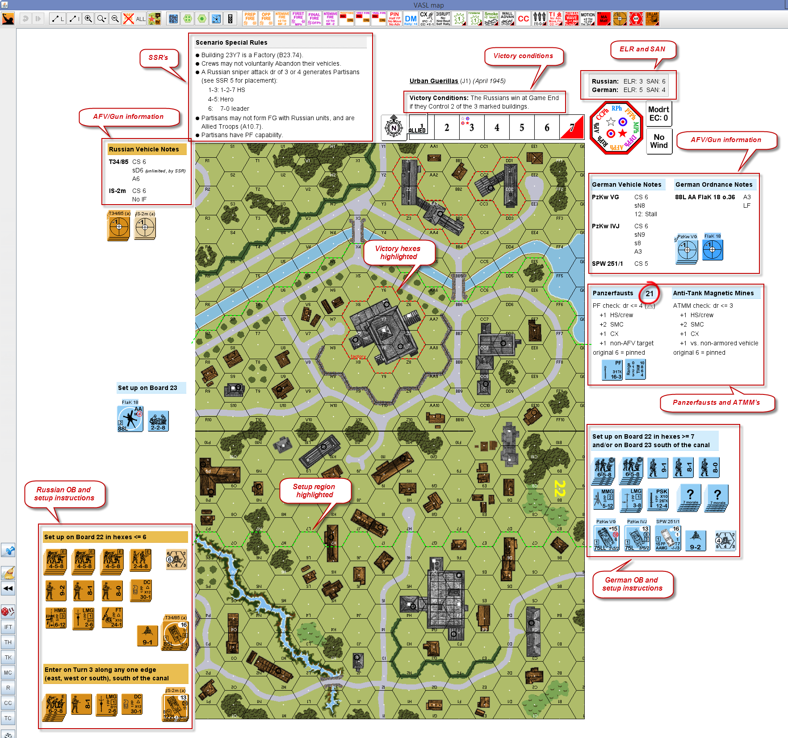

sample.png This tutorial explains how to add extra information to a VASL scenario, over and above just the Order of Battle. It takes a bit of time and effort, but it makes game play easier and more enjoyable, so for me, it's worth it .
The screenshot to the right shows my setup for the classic "Urban Guerillas", with all the information needed to play it:
And with a bit of practice, you'll be able to create monster setups like this one

Adding information to a scenario is done using labels.
Open the Draggable Overlays window, and drag a label onto the main window.
Labels come in two parts, which are accessible via the right-click menu, or press Ctrl-L and Ctrl-2 to access each one. I always just use the first line, so I delete everything in line 2.
The thick black box indicates that the label is selected. If you click elsewhere on the main window, it goes away, and the label will remain in place even if you click on it, or try to drag it. To select it again, Shift-click somewhere in the box, and you will be able to move it around, or edit it. This can sometimes be difficult to find, since it's not visible on-screen, but it will be in the middle (vertically and horizontally) of the label.
Type something into one of the label lines, and it will appear on-screen.
So far, so good, but things get much more interesting when we start using HTML.
If a label line starts with <html>, VASL will interpret the label as HTML, which uses special codes to change the appearance of the text.
For example, the HTML code for bolding text is to wrap it with <b> and </b>. Setting a label to this:
<html> This is <b>bold text</b>, this is not.
Similarly, use <i> and </i> to italicize text, and <u> and </u> to underline it.
<html> This is <i>italicized</i>, this is <u>underlined</u>.
To set up a bullet list, use <ul> and </ul>, and then <li> for each bullet point.
<html>
<ul>
<li> Germans
<li> Russians
<li> Klingons
</ul>
Finally, use <table> and </table> to present stuff in a table i.e. rows and columns. <tr> starts a new row, while <td> starts a new cell within the current row.
<html>
<table border=1>
<tr> <td> This one <td> That one
<tr> <td> Over here <td> Over there
</table>
The last 2 examples highlight a limitation VASL has when editing labels. It's nice to write your HTML over multiple lines, so that you can see how it's structured, but once you enter it into VASL, if you later want to change it, when you copy it out, VASL will have munged everything into one long line. To workaround this, I keep all my HTML in a separate text file and edit it there, and copy it into VASL, label by label.
All this was a really quick intro to HTML, but there are loads of tutorials online that go into more detail. We'll be using some more advanced features below, but I'll explain them as we go along.
This is the HTML template I use for adding Victory Conditions:
<html>
<b><u>SCENARIO NAME</u></b> (SCENARIO ID) <i>(SCENARIO DATE)</i>
<br><br>
<b>Victory Conditions:</b> ...
The only new tag used here is <br>, which starts a new line.
Adding a label for ELR and SAN is also straight-forward:
<html>
<table style="border:1px dotted #808080;background:#f0f0f0;">
<tr>
<td> <b> Russian: <br> German: </b>
<td> ELR: 1 <br> ELR: 2
<td> SAN: 3 <br> SAN: 4
</table>
This is the template I use for adding SSR's:
<html>
<table style="width:250px;">
<tr>
<td style="border-bottom:1px dotted #808080;background:#f0f0f0;">
<b>Scenario Special Rules</b>
<tr>
<td>
<ul style="margin:0 0 0 10px;">
<li> SSR #1
<li> SSR #2
<li> SSR #3
</ul>
</table>
The <table> tag has a CSS style that sets its width to 250 pixels.
The first row uses the techniques we've seen above to create a shaded header with bold text.
The second row creates a bullet list, with one item for each SSR. The style on the <ul> tag tightens up the spacing around the bullet list, which is quite large, by default.
This is the template I use for adding Order Of Battle setup instructions:
<html>
<table>
<tr>
<td style="width:200px;border-bottom:1px dotted #91cdf5;background:#d3edfc;">
<b> SETUP INSTRUCTIONS </b>
</table>
| border | background | |
| German | #91cdf5 | #d3edfc |
| Russian | #d68d1a | #eabe51 |
| American | #cdf000 | #e5f700 |
| British | #e5cea0 | #f6edda |
| Italian | #a6adb2 | #dde0e2 |
| French | #41a5ff | #a2ddff |
| Axis Minor | #1de256 | #7cf5b1 |
If panzerfausts are available, I add a label like this to the scenario:
<html>
<table>
<tr>
<td style="width:100px;border-bottom:1px dotted #91cdf5;background:#d3edfc;">
<b>Panzerfausts</b>
<tr>
<td>
range: 2 hexes <br>
PF check: dr <= 3 (△) <br>
<table style="margin-left:10px;">
<tr>
<td style="margin:0;padding:0;"> +1
<td style="margin:0;padding:0;"> HS/crew
<tr>
<td style="margin:0;padding:0;"> +2
<td style="margin:0;padding:0;"> SMC
<tr>
<td style="margin:0;padding:0;"> +1
<td style="margin:0;padding:0;"> CX
<tr>
<td style="margin:0;padding:0;margin-right:5px;"> +1
<td style="margin:0;padding:0;"> non-AFV target
</table>
original 6 = pinned
</table>
The range, Final dr required, and maximum number of shots vary depending on when the scenario takes place, so you can update these details for the particular scenario you're setting up.
If you want to track the maximum number of shots, you can add a label like this:
<html> <div style="font-size:12px;font-weight:bold;"> 123
Alternatively, I like to leave a few panzerfaust counters beside the map, so that I can easily see what's on the front and back of them, and you can add this label to one of them instead.
The template for ATMM checks is pretty much the same as the one for panzerfausts:
<html>
<table>
<tr>
<td style="width:150px;border-bottom:1px dotted #91cdf5;background:#d3edfc;">
<b>Anti-Tank Magnetic Mines</b>
<tr>
<td>
ATMM check: dr <= 3 <br>
<table style="margin-left:10px;">
<tr>
<td style="margin:0;padding:0;"> +1
<td style="margin:0;padding:0;"> HS/crew
<tr>
<td style="margin:0;padding:0;"> +2
<td style="margin:0;padding:0;"> SMC
<tr>
<td style="margin:0;padding:0;"> +1
<td style="margin:0;padding:0;"> CX
<tr><td style="margin:0;padding:0;margin-right:5px;"> +1
<td style="margin:0;padding:0;"> vs. non-armored vehicle
</table>
original 6 = pinned
</table>
This is the template I use for adding Vehicle and Gun notes.
<html>
<table>
<tr>
<td colspan=2 style="border-bottom:1px dotted #d68d1a;background:#eabe51;">
<b>Russian Vehicles</b>
<tr>
<td valign=top> <b>VEHICLE 1</b>
<td valign=top> info 1a <br> info 1b
<tr>
<td valign=top> <b>VEHICLE 2</b>
<td valign=top> info 2
<tr>
<td valign=top> <b>VEHICLE 3</b>
<td valign=top> info 3a <br> info 3b <br> info 3c
</table>
The colspan=2 attribute in the first <td> tag creates a table cell that spreads over 2 columns, while the valign=top attribute in the <td> tags vertically aligns text at the top of those table cells, instead of in the middle.
<html>
<table>
<tr>
<td colspan=2 style="border-bottom:1px dotted #d68d1a;background:#eabe51;">
<b>Russian Vehicle Notes</b>
<tr>
<td valign=top> <b>T34/85</b>
<td valign=top> CS 6 <br> sD6 <small><i>(unlimited, by SSR)</i></small> <br> A6
<tr>
<td valign=top> <b>IS-2m</b>
<td valign=top> CS 6 <br> No IF
</table>
To highlight hexes, perimeter lines can be added from the Map Annotations tab in the Draggable Overlays window. Right-click on them to see the options for rotating them, and adjusting their length.
If you want add a lot of these, it's often easier to add just a few of them to the board, Shift-click them so that they're all selected, then clone them (Ctrl-K). It won't be visible on-screen, but VASL will have made a copy of them, which can you then drag into their new position.
The "factory" marker in the screenshot is just a simple label, using red text:
<html> <font color=red>factory</font>